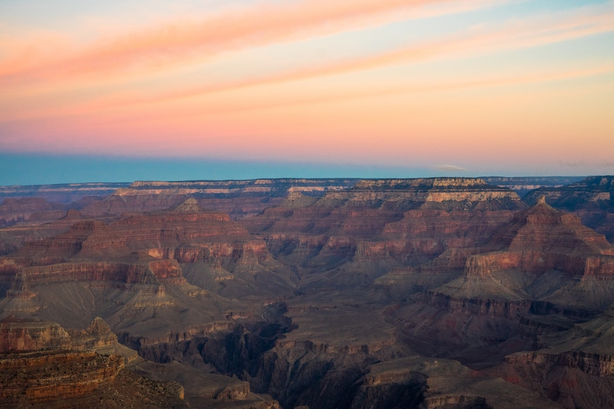

I was born in Brazil in 1976. I moved to the United States when I was 24 years old. I first came to the USA on a temporary work H2B visa and went to Grand Canyon, AZ.
Even though I graduated as an Architect from a prestigious university in Brazil, at first I had all kinds of random and very challenging jobs. I started as a housekeeper, than became a cafeteria worker, hostess, busser and finaly a cocktail waitress and bartender at the El Tovar Lounge.
How was life in the Grand Canyon?
- It was absolutely beatiful
- You can meet people from all over the world in a national park
- We barely had to drive to go places
After leaving the Grand Canyon I moved to several places:
- Salt Lake City, UT
- Portland, OR
- Miami, FL
- Donner Summit, CA
Now I am hapilly settled in Naples, FL
I live in a beatiful neighborhood called Naples Park, very close to the beach


How is life in Naples?
Watch this video to find out how it is to live in one of the wealthiest areas in the US